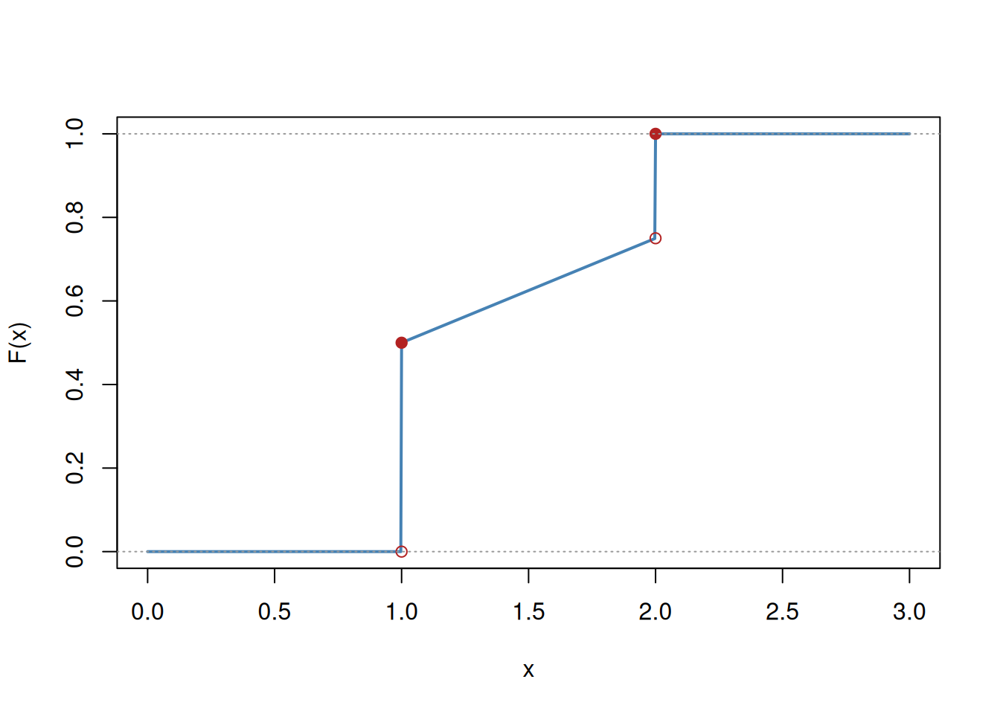
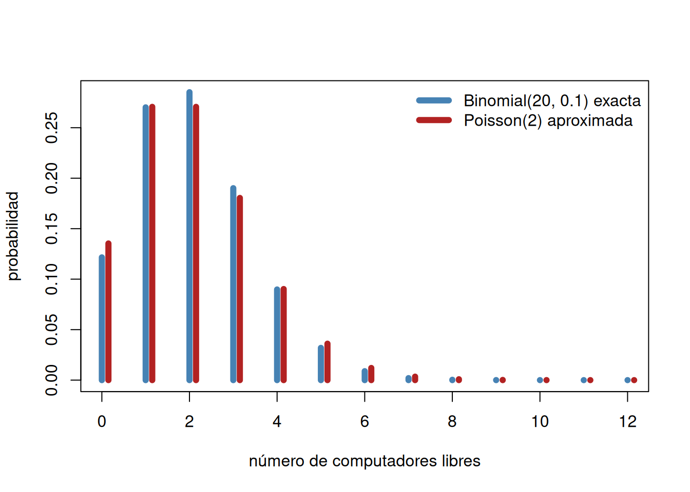

Descomposición de Jordan y distribuciones discretas notables
Reconstrucción de la función de masa a partir de la función de distribución en el caso discreto, el teorema de descomposición de Jordan para distribuciones mixtas, y las distribuciones discretas notables (Bernoulli, binomial, Poisson como límite de la binomial, hipergeométrica, geométrica y binomial negativa), con ejemplos aplicados a un examen de opción múltiple, una sala de cómputo, extracciones sin reemplazo y una meta de ventas.
Autor
Arturo Sanjuán
Fecha de publicación
5 de septiembre de 2026
1 Repaso: de la distribución a la función de masa
NotaTarea
Repase las definiciones de variable aleatoria discreta y de variable aleatoria continua, la definición de función de masa (función de probabilidad), y cómo se reconstruye la función de masa a partir de la función de distribución en el caso discreto. Vea la sección de variables aleatorias y el libro de Blanco Castañeda.
Recordemos el hecho central: si \(X\) es discreta, \(F_X\) solo puede tener a lo más una cantidad numerable de saltos, y el salto en cada punto \(x\) es exactamente \(P(X=x) = F_X(x)-F_X(x^-)\) (corolario 2.25, parte 6, visto en la sección anterior). Esto permite pasar de \(F_X\) a la función de masa sin perder información: basta con localizar los puntos de discontinuidad y medir el tamaño de cada salto.
2 El teorema de descomposición de Jordan
No toda función de distribución es puramente discreta ni puramente continua. El teorema siguiente muestra que, en general, cualquier función de distribución se descompone como combinación convexa de una parte discreta y una parte continua.
TipTeorema (descomposición de Jordan)
Sea \(F\) una función de distribución arbitraria. Entonces existen \(\alpha\in[0,1]\), una función de distribución discreta \(F_d\) y una función de distribución continua \(F_c\) tales que
\[F = \alpha F_d + (1-\alpha) F_c\]
Demostración. Toda función monótona tiene a lo más una cantidad numerable de discontinuidades (hecho estándar de análisis real); en particular, \(F\) tiene a lo más una cantidad numerable de saltos. Sean \(x_1,x_2,\ldots\) los puntos donde \(F\) salta, y sea
\[p_n := F(x_n)-F(x_n^-)\]
la magnitud del salto en \(x_n\). Como \(F\) es no decreciente y acotada entre \(0\) y \(1\), la serie \(\sum_n p_n\) converge; definimos \(\alpha:=\sum_n p_n\in[0,1]\).
Si \(\alpha=0\) no hay saltos y \(F\) ya es continua (\(F_c:=F\)). Si \(\alpha>0\), definimos
\[F_d(x) := \alpha^{-1}\sum_{x_n\le x} p_n\]
NotaTarea
Verifique que \(F_d\), definida así, es en efecto una función de distribución discreta: que es no decreciente, continua a derecha, y que \(\lim_{x\to-\infty}F_d(x)=0\), \(\lim_{x\to\infty}F_d(x)=1\).
Si \(\alpha=1\) entonces \(F=F_d\) y ya terminamos. Si \(\alpha<1\), definimos
\[F_c(x) := \frac{F(x)-\alpha F_d(x)}{1-\alpha}\]
NotaTarea
Verifique que \(F_c\) es una función de distribución continua: en particular, que no tiene saltos, es decir, que en cada \(x_n\) el salto de \(F\) queda enteramente absorbido por \(\alpha F_d\).
En cualquier caso, \(F=\alpha F_d+(1-\alpha)F_c\), lo que demuestra el teorema. \(\blacksquare\)
ImportanteQué dice realmente el teorema
El teorema no dice que toda variable aleatoria sea “mitad discreta, mitad continua”. Dice que la parte discreta de cualquier distribución (sus saltos) se puede aislar por completo, y que lo que queda después de retirarle esa parte es necesariamente continuo. La constante \(\alpha\) mide qué tanto de la probabilidad total vive en los saltos.
2.1 Ejemplo: una distribución mixta
TipEjemplo
Sea \(X\) una variable aleatoria con función de distribución
\(F\) tiene un salto en \(x=1\) de magnitud \(1/2\) y otro en \(x=2\) de magnitud \(1/4\) (pues \(F(2^-)=3/4\) y \(F(2)=1\)). Así, \(\alpha=1/2+1/4=3/4\).
F <-function(x) ifelse(x <1, 0, ifelse(x <2, 1/2+ (x -1)/4, 1))curve(F, from =0, to =3, n =1000, col ="steelblue", lwd =2,xlab ="x", ylab ="F(x)")points(c(1, 2), c(1/2, 1), pch =19, col ="firebrick")points(c(1, 2), c(0, 3/4), pch =1, col ="firebrick")abline(h =c(0, 1), lty =3, col ="gray60")

Figura 1: Función de distribución mixta del ejemplo, con salto de 1/2 en x=1, tramo uniforme en [1,2] y salto de 1/4 en x=2
3 Algunas distribuciones discretas notables
En esta sección repasamos las distribuciones discretas de uso más frecuente. En todos los casos, la función de masa se deduce contando: se trata siempre de identificar cuántos resultados elementales, en algún espacio de Laplace subyacente, producen cada valor de la variable.
3.1 Uniforme discreta
Ya la conocemos: si \(X\) toma cada uno de los valores \(1,\ldots,N\) con la misma probabilidad, \(P(X=k)=1/N\). Es la traducción directa, en el lenguaje de variables aleatorias, del modelo de Laplace visto en la sección de cálculo de probabilidades.
3.2 Bernoulli
Si un ensayo aleatorio tiene solo dos resultados posibles, éxito y fracaso, con \(P(\text{éxito})=p\), la variable indicadora del éxito tiene distribución Bernoulli de parámetro \(p\):
\[P(X=x) = p^x(1-p)^{1-x}, \qquad x=0,1\]
TipEjemplo
Lanzar una moneda corriente y llamar éxito a obtener cara: \(p=1/2\). Lanzar un dado corriente y llamar éxito a obtener un 2: \(p=1/6\).
3.3 Binomial
Si repetimos \(n\) veces, de forma independiente, un ensayo de Bernoulli con probabilidad de éxito \(p\), y \(X\) cuenta el número total de éxitos, entonces \(X\) tiene distribución binomial de parámetros \(n\) y \(p\):
El coeficiente \(\binom nk\) cuenta todas las formas de elegir cuáles de los \(n\) ensayos resultan exitosos; una vez elegidos, la probabilidad de esa secuencia particular es \(p^k(1-p)^{n-k}\) por independencia.
ImportanteEs, en efecto, una función de masa
Por el teorema del binomio de Newton,
\[\sum_{k=0}^n \binom nk p^k(1-p)^{n-k} = \big(p+(1-p)\big)^n = 1\]
TipEjemplo: examen de opción múltiple
Un examen de opción múltiple tiene \(10\) preguntas, cada una con \(5\) opciones. Un estudiante contesta al azar. ¿Cuál es la probabilidad de pasar, si pasar requiere al menos \(6\) respuestas correctas?
Cada pregunta es un ensayo de Bernoulli con \(p=1/5\). Si \(K\) es el número de respuestas correctas, \(K\sim B(10,1/5)\) y
Figura 2: Función de masa de B(10, 1/5): en rojo, la región P(K≥6) que corresponde a pasar el examen adivinando
3.4 Poisson, como límite de la binomial
¿Qué ocurre con la binomial cuando \(n\to\infty\) y \(p\to0\) de tal manera que el número esperado de éxitos \(np\) se mantiene fijo, digamos \(np=\lambda\)?
TipTeorema (Poisson como límite de la binomial)
Si \(p(n)\to0\) y \(np(n)\to\lambda\) cuando \(n\to\infty\), entonces para cada \(k\) fijo,
\[\binom nk p(n)^k(1-p(n))^{n-k} \xrightarrow[n\to\infty]{} \frac{\lambda^k}{k!}e^{-\lambda}\]
Idea de la demostración. Escribiendo \(p=p(n)\) y usando \(np\to\lambda\),
\[\binom nk p^k(1-p)^{n-k} = \frac{n(n-1)\cdots(n-k+1)}{n^k}\cdot\frac{(np)^k}{k!}\cdot\Big(1-\frac{np}{n}\Big)^{n-k}\]
El primer factor tiende a \(1\) (es un producto de \(k\) términos, cada uno de la forma \(1-j/n\to1\)), el segundo tiende a \(\lambda^k/k!\), y el tercero tiende a \(e^{-\lambda}\) (el límite clásico \((1-\lambda/n)^n\to e^{-\lambda}\); cambiar el exponente de \(n\) a \(n-k\) no afecta el límite). \(\blacksquare\)
Esto motiva la definición: \(X\) tiene distribución Poisson de parámetro \(\lambda>0\) si
Verifique que, en efecto, \(\sum_{k=0}^\infty\frac{\lambda^k}{k!}e^{-\lambda}=1\) (use la serie de Taylor de \(e^\lambda\)).
ImportanteNota histórica
Poisson presentó esta distribución en 1837, en su tratado Recherches sur la probabilité des jugements en matière criminelle et en matière civile, en el contexto de estimar la probabilidad de error en veredictos de jurados.
TipEjemplo: la sala de cómputo
En una sala de cómputo hay \(20\) computadores. En horas pico, la probabilidad de que un computador esté ocupado es \(0{,}9\). ¿Cuál es la probabilidad de encontrar al menos un computador desocupado?
Cálculo exacto. Sea \(X\) el número de computadores ocupados; \(X\sim B(20,0{,}9)\), y “ningún computador desocupado” es el evento \(X=20\):
\[P(\text{todos ocupados}) = 0{,}9^{20}\approx0{,}1216 \qquad\Rightarrow\qquad P(\text{al menos uno libre}) \approx0{,}8784\]
Aproximación Poisson. Como lo raro aquí es que un computador esté libre (\(p_{\text{libre}}=0{,}1\)), llamamos \(Y\) al número de computadores libres, con \(\lambda=np_{\text{libre}}=20(0{,}1)=2\):
La aproximación (\(0{,}8647\)) se acerca razonablemente al valor exacto (\(0{,}8784\)), aunque aquí \(p=0{,}1\) no es tan pequeño ni \(n=20\) tan grande como para que la aproximación sea excelente.
x <-0:12exacta <-dbinom(x, size =20, prob =0.1)aprox <-dpois(x, lambda =2)plot(x, exacta, type ="h", lwd =6, col ="steelblue",xlab ="número de computadores libres", ylab ="probabilidad")points(x +0.15, aprox, type ="h", lwd =6, col ="firebrick")legend("topright", legend =c("Binomial(20, 0.1) exacta", "Poisson(2) aproximada"),col =c("steelblue", "firebrick"), lwd =6, bty ="n")

Figura 3: Binomial(20, 0.1) exacta (azul) contra su aproximación Poisson(2) (rojo), para el número de computadores libres
NotaEjercicios del libro
Haga los ejercicios de la sección 3.4 del libro de Blanco relacionados con binomial y Poisson.
3.5 Hipergeométrica
Volvamos al modelo de urnas, pero ahora sin reemplazo. Si una urna tiene \(N\) bolas, \(R\) de un color (éxito) y \(N-R\) de otro, y extraemos una muestra de tamaño \(n\) sin reemplazo, el número \(X\) de bolas de éxito en la muestra tiene distribución hipergeométrica de parámetros \(n\), \(R\), \(N\):
Siga estos pasos para demostrar que \(\sum_k P(X=k)=1\).
Aplique el teorema del binomio de Newton a la identidad \((1+z)^R(1+z)^{N-R}=(1+z)^N\).
Iguale el coeficiente de \(z^n\) en ambos lados para obtener la identidad de Vandermonde: \(\binom Nn = \sum_{k=0}^n\binom Rk\binom{N-R}{n-k}\).
Use esa identidad para concluir que \(\sum_k P(X=k)=1\).
TipEjemplo
De una urna con \(25\) bolas numeradas del \(1\) al \(25\) se extraen \(4\) bolas sin reemplazo. Usted apuesta a que al menos una de las cuatro tiene un número menor o igual a \(5\). ¿Cuál es la probabilidad de ganar?
Aquí \(N=25\), \(R=5\) (las bolas de éxito, numeradas de 1 a 5), \(n=4\). Queremos \(P(K\ge1)\) donde \(K\sim Hg(4,5,25)\):
Es decir, aproximadamente \(61{,}7\%\) de probabilidad de ganar la apuesta.
3.6 Geométrica
Ahora cambiamos la pregunta: en vez de fijar el número de ensayos y contar éxitos, fijamos el número de éxitos deseado en \(1\) y preguntamos cuántos ensayos hacen falta para conseguirlo. Si \(X\) es el número de ensayos hasta el primer éxito (inclusive), con probabilidad de éxito \(p\) en cada ensayo:
\[P(X=k) = p(1-p)^{k-1}, \qquad k=1,2,\ldots\]
pues los primeros \(k-1\) ensayos deben fallar y el \(k\)-ésimo debe tener éxito.
3.7 Binomial negativa
Generalizando: si \(X\) es el número de ensayos necesarios para conseguir exactamente \(r\) éxitos (el último ensayo es, por fuerza, un éxito, y los otros \(r-1\) éxitos se reparten entre los primeros \(k-1\) ensayos), \(X\) tiene distribución binomial negativa de parámetros \(r\) y \(p\):
Siga estos pasos para demostrar que \(\sum_{k=r}^\infty P(X=k)=1\).
Cambie de variable \(y:=k-r\) y reescriba la serie en términos de \(y\), \(r\) y \(p\).
Use la expansión en serie de Taylor de \((1-z)^{-r}\) alrededor de \(z=0\), válida para \(|z|<1\): \((1-z)^{-r} = \sum_{y=0}^\infty\binom{y+r-1}{r-1}z^y\).
Reemplace \(z\) por \(1-p\) y compare con la serie del paso 1.
TipEjemplo: una meta de ventas
Un vendedor cierra una venta con probabilidad \(0{,}3\) en cada llamada, de forma independiente. Su meta es lograr \(3\) ventas. ¿Cuál es la probabilidad de alcanzar la meta justo en la octava llamada?
dnbinom(x, size, prob) en R no cuenta el número de ensayos \(k\) (la convención de esta sección), sino el número de fracasos antes del éxito número size. Para usarla con nuestra \(X\), hay que pasarle \(x=k-r\), no \(k\).
r <-3p <-0.3k <-8# fórmula de esta sección: P(X = k) = C(k-1, r-1) p^r (1-p)^(k-r)manual <-choose(k -1, r -1) * p^r * (1- p)^(k - r)# equivalente en R: dnbinom cuenta fracasos, así que x = k - rr_base <-dnbinom(k - r, size = r, prob = p)manual
[1] 0.09529569
r_base
[1] 0.09529569
4 Panel interactivo: distribuciones discretas
El siguiente panel calcula, de forma exacta y no por simulación, la función de masa y la función de distribución acumulada de las siete distribuciones vistas en esta sección. Elija una distribución, mueva los parámetros y compare cómo cambia la forma de cada función; para las distribuciones de soporte infinito (Poisson, geométrica, binomial negativa) la cola se trunca al llegar a una cobertura de probabilidad cercana a 1, y el panel lo indica explícitamente cuando eso ocurre.
NotaEjercicios del libro
Haga los ejercicios del capítulo 2 que se resuelvan usando la teoría de variables aleatorias discretas.